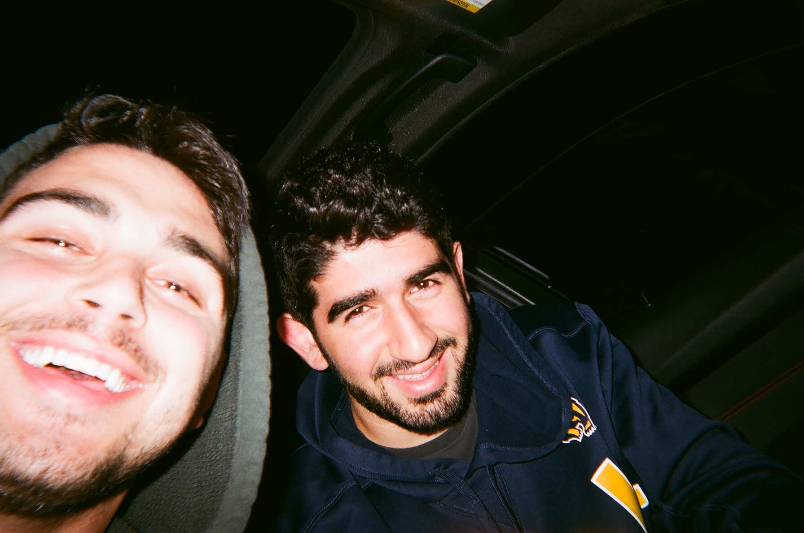
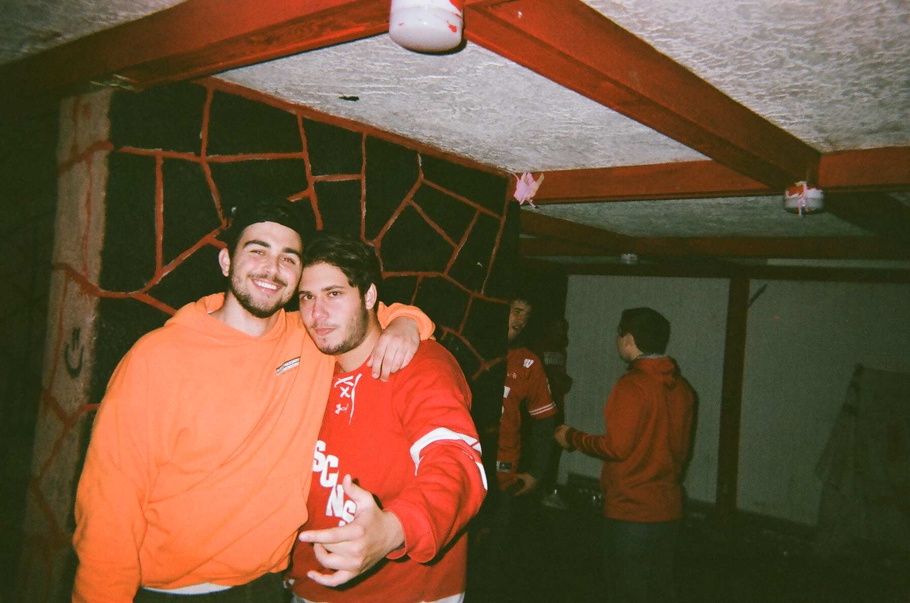
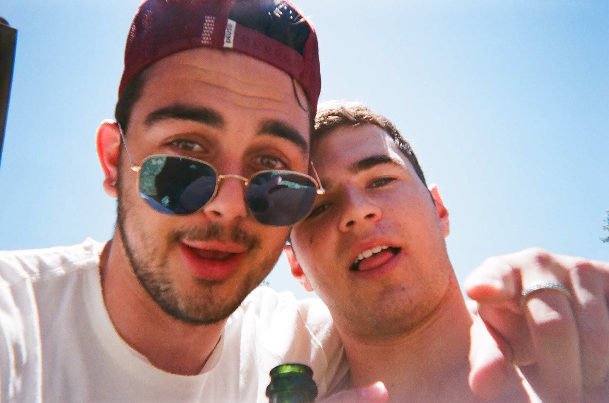

My name is Jarred Asars and I am the creator of * snap *. This website is dedicated to the pictures I have taken with my disposable cameras and my iPhone camera.
Sometimes, pulling out your phone to take the perfect picture of something will ruin the moment. We are constantly on the search for these moments. The perfect picture does not exist; a priceless moment does.
Check out more about me on my instagram https://www.instagram.com/jarredasars
  